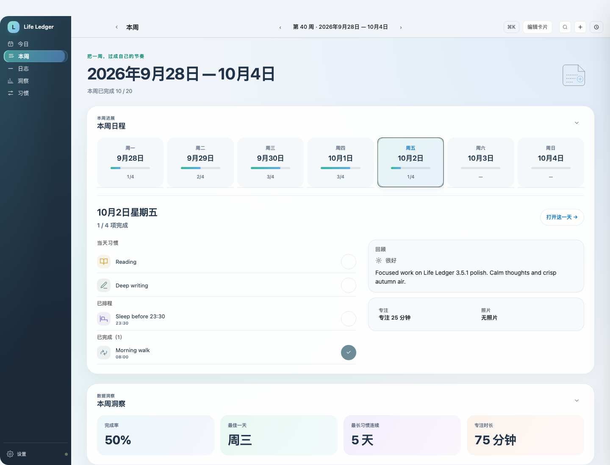
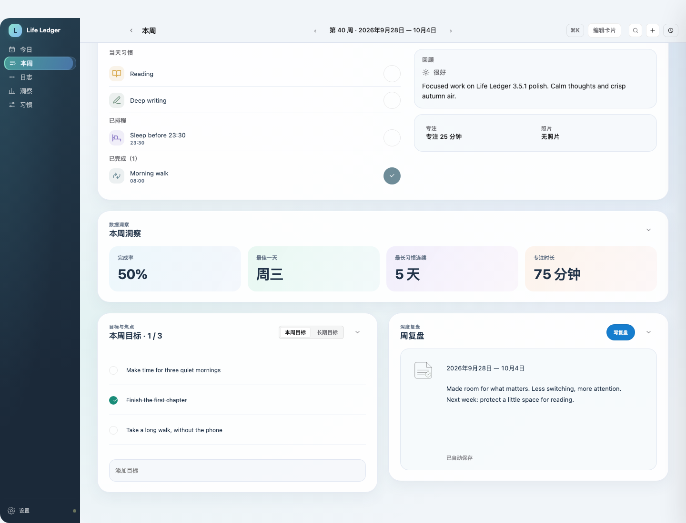
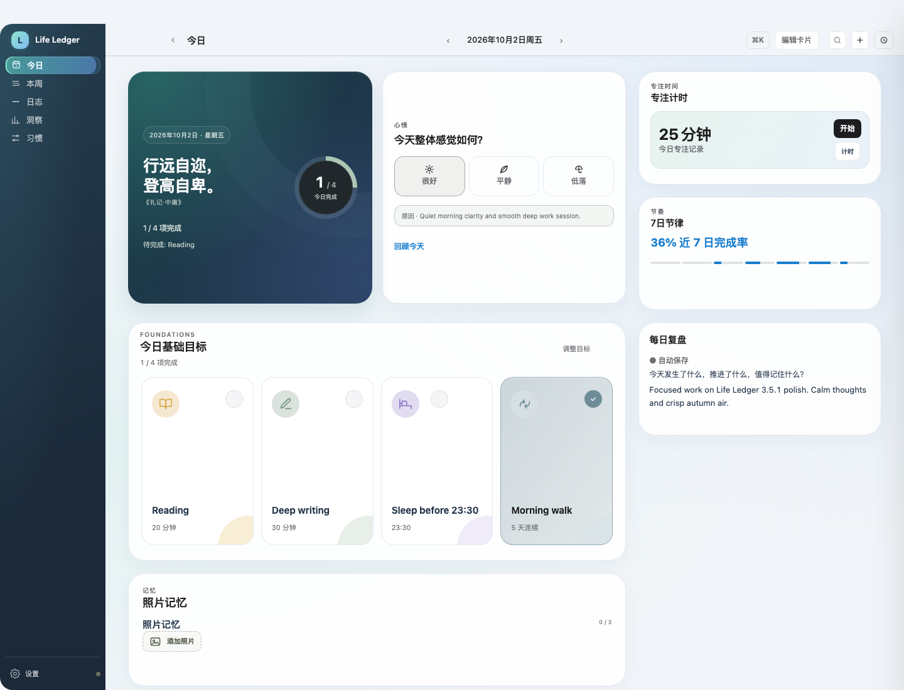
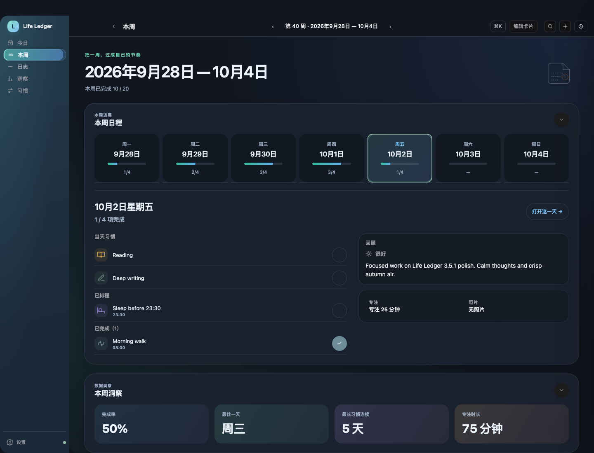
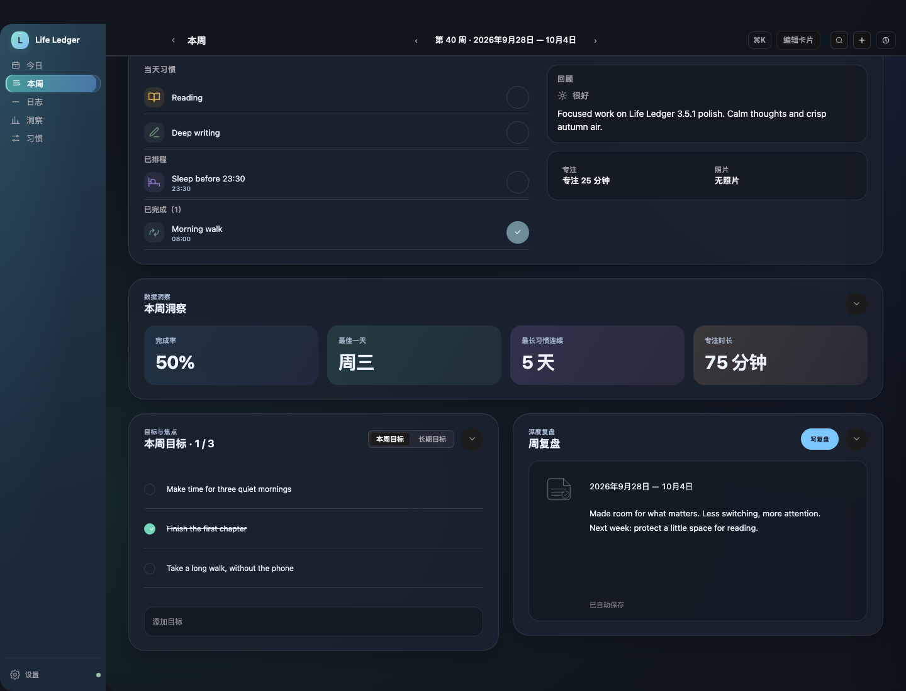
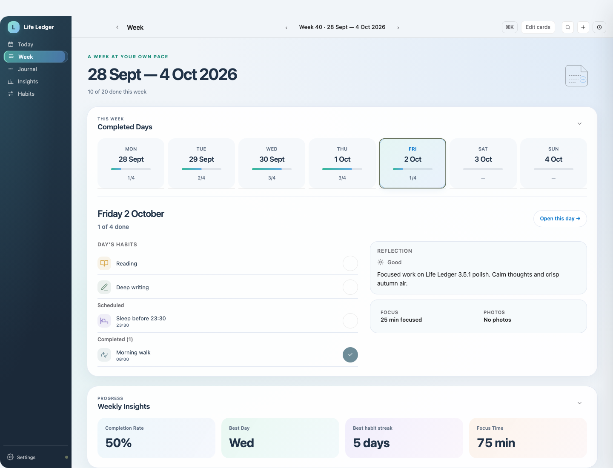
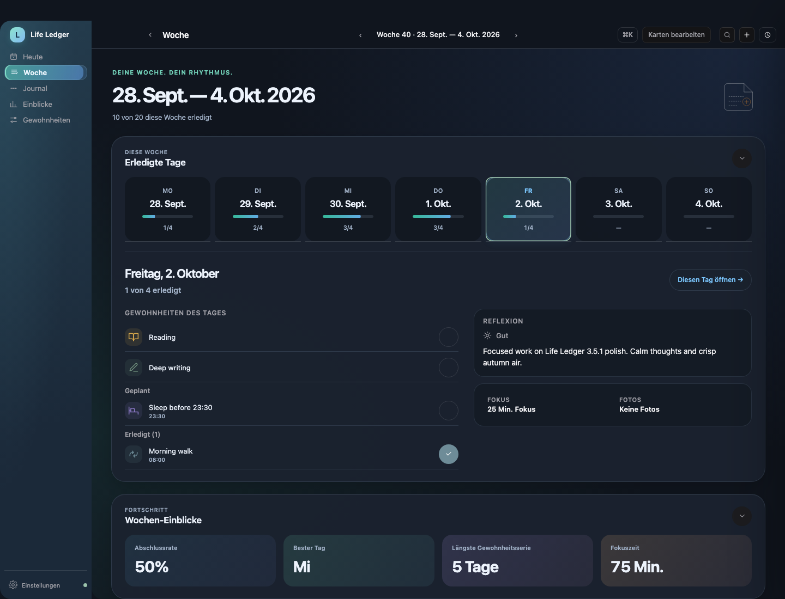
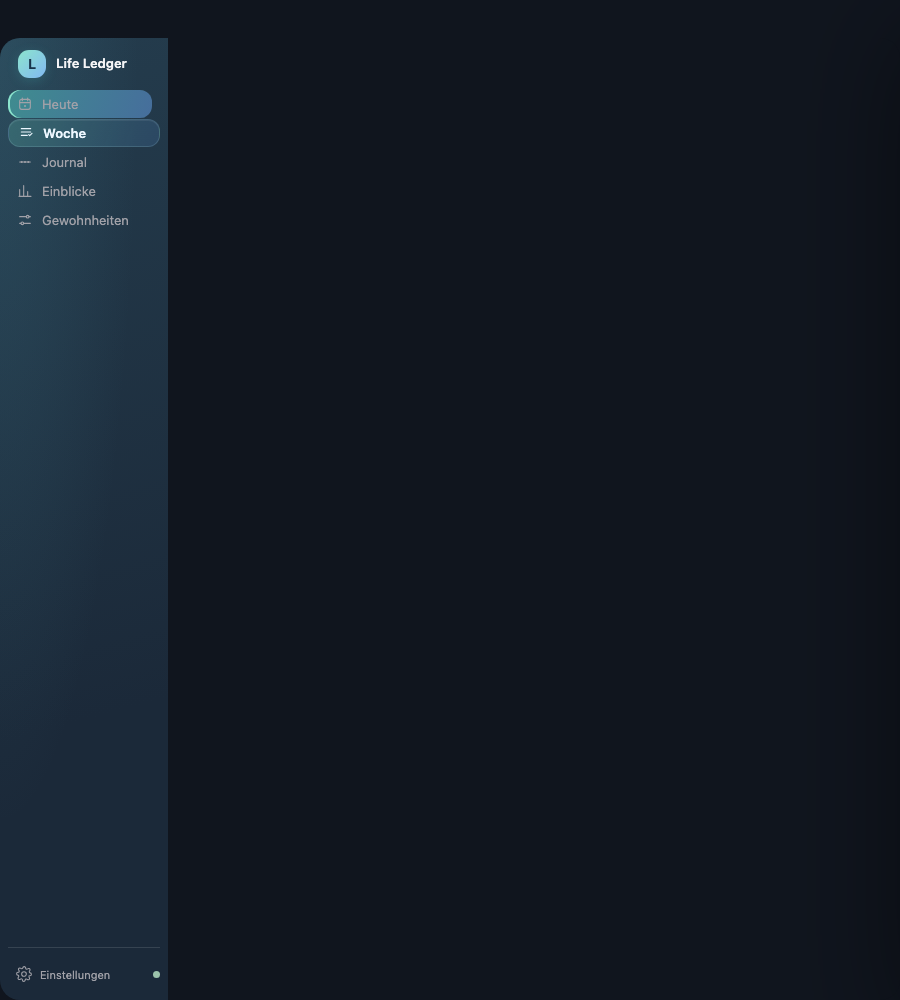
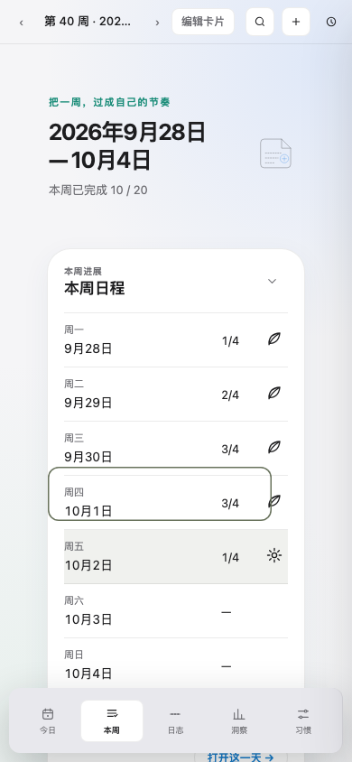

本轮调整本周页，同时同步今日页的外层框架、青蓝光影与鼠标反馈。这里是实际应用路由的无界面浏览器截图和操作录屏，不是另画的静态 mockup；尚未打包、发布或替换你本机的 App。
切换日期 → 当天习惯打卡 → 整页滚动查看目标/复盘 → 切回今日。字幕和圆形鼠标标记只属于录屏，记录均为虚构示例。

日期轨道支持鼠标、左右方向键、Home/End。Enter 与点击保持同一选择语义；另设“打开这一天”进入今日。未来日期不能提前打卡。

整页只有一个主要纵向滚动面。目标可以添加、完成、删除；复盘沿用原有自动保存。编辑模式保留隐藏、折叠与排序，不用固定高度把文字挤出卡片。

保留已确认的组件与 S/M/L。正常模式鼠标经过卡片时出现位置跟随的内高光，日期和图标有轻微反馈。键盘与 reduced/off 不播放装饰位移。原生窗口标题栏、系统按钮和真正的窗口圆角仍由 macOS 管理，本轮只调整应用内部框架。


English · Light

Deutsch · Dark

900px · Deutsch

Mobile web · 中文
